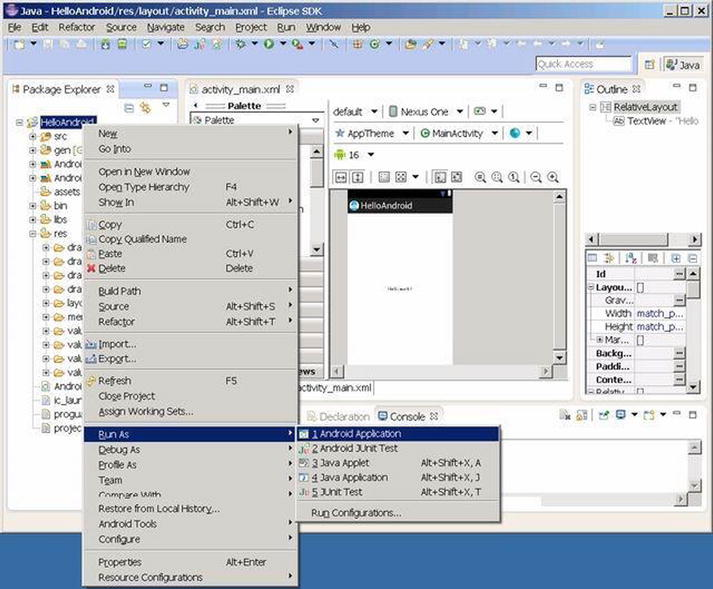
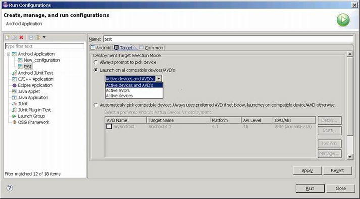

So far, you have completed installing the development environment for an emulator target machine. But if your target machine is a real device (for example, a mobile phone or a tablet with the Intel Inside logo), you need to install and configure the development environment for it. This chapter discusses how to build an application development with a real Android device, including how to install drivers and connect the device to your development host machine. Later, you see how to create an application and test it on both an emulator and a real device.
Mobile Phone Setting
There are many ways to set up a real device to support the Android SDK adb connection, and the settings vary from device to device. For example, in the case of the Lenovo K900 smartphone, you open the debugging function of the Android device by selecting Settings ➤ Applications ➤ Development and clicking USB Debugging. For some other devices, the USB Debugging option is not available because the developer option by default is not enabled. One example is the Dell Venue 8 Android tablet. To enable the developer option on a Dell Venue Android tablet, you need to go to Settings ➤ About ➤ Build Number; tap Build Number seven times to enable the Dell Venue Developer Option, which will then appear under System Category.
Installing the USB Driver on the Host Machine
This chapter uses the Lenovo K900 smartphone as an example of how to install a mobile phone USB driver on the host machine:
1.
Connect the mobile phone to the development PC via USB cable.
Figure 4-1.
Lenovo K900 ADB device in Device Manager (a yellow ? appears on top of the icon if Device Manager is unable to recognize the mobile phone when a USB driver is not installed)
3.
Install the driver. The driver can be found from the phone manufacturer or sometimes, as for the K900, from the emulated CD-ROM device when the phone USB connection is set to Driver Installation mode.
When you connect a Lenovo phone using a USB cable to your Windows laptop, a CD-ROM is mounted to the directory as shown in Figure 4-2. The file structure of the USB memory stick of the Lenovo Intel phone is
E: \Lenovo Kxxx Mobile phone driver>dir
2011-09-21 09:08 30 Autorun.inf
2012-03-23 17:10 2,366,976 bootstrap.exe
2012-03-23 17:15 69 bootstrap.ini
2012-03-23 10:57 10,993,152 LeDrivers.msi
Figure 4-2.
Directory display on the Windows host machine
Figure 4-3.
Lenovo K900 Device Drivers Setup dialog
5.
Restart the host machine after installation.
You can see that the ADB interface has been installed. In the software list, the Lenovo Racer-A Device Drivers have been successfully installed (see Figure 4-4).
Figure 4-4.
Software list for the Lenovo K900 after installation
Interaction between the Host Machine and the Target Machine
With the environment configured, the host and target machines can now use the Android development environment to provide auxiliary tools for more interaction in addition to the deployment operation during application development. You have more control over the target machine, including an emulator-type target machine. The use of these tools is introduced in the following sections.
Developing Android Applications
This section explains how to use Eclipse with the Android SDK to create a project, edit it, and run the application using an emulator and a real device.
Creating a Project
To create a project, follow these steps:
1.
Start Eclipse, and select File ➤ New ➤ Project. In the New Project dialog box, select Android ➤ Android Application Project, and click Next to continue (see Figure 4-5).
Figure 4-5.
Starting a new Android project
2.
In the New Android Application dialog box, enter an application name in the Application Name field, as shown in Figure 4-6. The Project Name and Package Name are auto-populated. Note that the set project name is also the application name on the target machine.
Figure 4-6.
New project (application) name
3.
Use the default configuration, and click Next. The Configure Launcher Icon dialog box appears (see Figure 4-7).
Figure 4-7.
New project—application icon setting
4.
Use the default configuration, and click Next. The Create Activity dialog box appears (see Figure 4-8).
Figure 4-8.
New project—activity setting (1)
5.
Use the default configuration, and click Next. The New Blank Activity dialog box appears (see Figure 4-9).
Figure 4-9.
New project—activity setting (2)
The file structure and content look like Figure 4-10.
Figure 4-10.
New project—directory structure
Editing and Running (on the Emulator)
To test run the application using emulator, please do the following steps:Perform the following steps.
1.
Right-click the project name, and select Run As ➤ Run Configuration on the shortcut menu. Or, from the menu, select Run ➤ Run Configuration.
2.
In the dialog box, right-click Android Application (current project name), and select New. Left-click the Target tab, and click the Automatically Pick Compatible check box. Select the Intel Atom-related AVD in the list. Click Apply and then Close to close the dialog (see Figure 4-11).
Figure 4-11.
Runtime configuration of the emulator target machine
3.
Right-click the project name, and select Run As ➤ Android Application from the shortcut menu (see Figure 4-12).

Figure 4-12.
Editing and runtime for starting an Android application
4.
Before running, the message box shown in Figure 4-13 appears. Click OK to continue. The emulator window appears and shows the running results.
Figure 4-13.
Message prompt before running Android
On the host machine, the console window of Eclipse shows the progress of editing, deploying, and running, as shown in Figure 4-14.
Figure 4-14.
Eclipse interface when running an Android application
When the last sentence appears, the emulator screen displays the application window, as shown in Figure 4-15. Note: This process takes about 2 minutes if Intel HAXM is installed and working on your host machine.
Figure 4-15.
An application running an interface on the emulator
5.
Click the DDMS button in the upper-right corner of the Eclipse window to enter the DDMS interface. The pane on the left shows the applications currently running on the target machine (emulator). In this example, com.example.helloandroid and helloandroid are running (see Figure 4-16).
Figure 4-16.
DDMS interface of Eclipse
6.
You can see that the menu changes on the target machine. Click the Home button
on the keyboard to see the interface shown in Figure 4-17. Then click the third button from the left at the bottom of the screen.
Figure 4-17.
Home page of the emulator
In the application list shown in Figure 4-18, you can see the new MainActivity application.
Figure 4-18.
The application list on the emulator
7.
To stop running the application, click the DDMS button in the upper-right corner of Eclipse to enter the DDMS interface. Select the debugging software from the progress list on the left (usually com.example.[project name]). Click Stop Process (see Figure 4-19) to end running the process on the target machine.
Figure 4-19.
Ending running the application in DDMS
Then you see the page of the emulator’s default application, as shown in Figure 4-20.
Figure 4-20.
Initial page of the emulator
8.
Click Java at upper left in Eclipse. The IDE interface goes back to the original editing status (see Figure 4-21).
Figure 4-21.
The Eclipse editing interface
9.
Close the emulator window.
Running on the Real Device
To run the application on the real device, follows these steps:
1.
Connect the mobile phone to the PC.
2.
Enter the Eclipse window, and right-click the project name. In the shortcut menu, select Run As ➤ Run Configuration; or, in the Eclipse menu, select Run ➤ Run Configuration.
3.
In the dialog box, left-click Android Application, [current project name]. Left-click the Target tab, and click Launch On All Compatible Devices/AVD’s, which is set to Active Devices And AVD’s. Click Apply and Close to close the dialog (see Figure 4-22).

Figure 4-22.
Setup for running an application on the real device
4.
Right-click Project Name, and select Run As ➤ Android Application from the shortcut menu.
On the real device, you can see the interface running on the application, as shown in Figure 4-23.
Figure 4-23.
Application interface on the real device
The application icon appears on the mobile phone menu. And you can see in Figure 4-24 that MyMainActivity has already been installed on the mobile phone menu.
Figure 4-24.
Application list on the real device
What’s interesting is that the application process on the real device is much smaller than on the virtual device (see Figure 4-25). It has only one application process.
Figure 4-25.
DDMS interface of Eclipse
In contrast to running your application on the emulator, the Eclipse console pane (see Figure 4-26) does not provide much information about editing and deployment.
Figure 4-26.
Eclipse interface while the application is running
5.
Stop running the application by following the same steps as for the emulator.
Debugging Android Applications
Debugging is an important step in the application development process. For x86 platform targets, you need an x86-based device or x86 simulator to test and debug the application. With IA phones and tablets like the Lava Xolo and Lenovo K900 and tablets such as Samsung Galaxy Tab 10.1 and Dell Venue 7/8 on the market, you can test and debug apps on real x86-based tablets and phones.
If you don’t have x86 devices for testing, the x86 simulator works just fine. You can use Android SDK Manager to install the x86 simulator.
Editinging the Source Code
In the Eclipse project file pane, find the \XXX\src\com.example.XXX\***.java file, where XXX is the project name. Double-click the file name, and the source code is displayed on the right. Edit the source code by adding the lines of code shown in Figure 4-27 (shaded lines).
Figure 4-27.
Modifying the source code in Eclipse
Setting Breakpoints
With the cursor over the code, right-click Toggle Breakpoint in the shortcut menu, as shown in Figure 4-28.
Figure 4-28.
Menu to set a breakpoint
A green icon is displayed on the left side of the code that has a breakpoint set, as shown in Figure 4-29.
Figure 4-29.
Display after a breakpoint is set
Repeat this process to cancel a breakpoint set on a line of code.
Starting Debugging
To start debugging, follow these steps:
1.
Right-click the project name. In the pop-up menu, select Debug As ➤ Android Application (see Figure 4-30).
Figure 4-30.
Entering the debugging state
Figure 4-31.
Message box after entering the debugging state
Figure 4-32.
Interface of the Eclipse IDE during debugging
Figure 4-33.
The emulator interface during debugging
Program Execution Techniques
If you want to carry out single-step execution, click in the code window to make it the active window (see Figure 4-34). You can highlight the code section and right-click to access the menu shown in Figure 4-34. From the menu, select Step Over, Step Into, or Step Return to execute.
Figure 4-34.
Single-step execution
Observing the Debugging Output of the Log.X Function
The Log.X function is equivalent to the MFC TRACE function and is used to output information in the Eclipse LogCat window. To observe the debugging output of Log.X, follows these steps:
1.
If the LogCat pane is not shown, click Window ➤ Show View ➤ LogCat (see Figure 4-35). The LogCat may not be found depending on the ADT version you are using. If you cannot find LogCat, you can select Other to display more options and add LogCat into your list. LogCat is in the Android category.
Figure 4-35.
Viewing LogCat
2.
Single-step execute two Log.d sentences:
a.
Click and activate the code window.
b.
Press the F6 key to browse the code. You may need to press F6 multiple times to reach the latest output of these sentences in the LogCat window (see Figure 4-36).
Figure 4-36.
Viewing output in the LogCat window
3.
Create a filter for the debugging output information by clicking the Add A New LogCat Filter button in the upper-right corner of the LogCat window (see Figure 4-37). Enter the Filter Name and By Log Tag in the dialog box. Filter Name can be any name you like, but By Log Tag must be the first parameter (string) of the Log.d() function in the source code. Then click OK to close the window.
Figure 4-37.
Creating a new LogCat filter
In Figure 4-38, you can see the the called output information of Log.X dislayed in the LogCat window.
Figure 4-38.
The LogCat window displaying the filtered output
Observing Variables
To observe variables, select Run ➤ Watch, as shown in Figure 4-39.
Figure 4-39.
The Watch command
Right-click the Expression tab to pop up the menu as shown. Click Add New Expression as shown in Figure 4-40 to add variables for observation.
Figure 4-40.
Adding variables for observation
Ending Debugging
Click Terminate on the toolbar (Figure 4-41) or select Terminate on the Run menu to end debugging.
Figure 4-41.
Ending debugging by clicking the Terminate button
You can see the default application page displayed by the emulator, as shown in Figure 4-42.
Figure 4-42.
The default application page displayed by the emulator
Go back to the editing home page. Click Java the upper-left corner in Eclipse; the IDE interface goes back to the original editing status.
Intel Auxiliary Tools for Android Application Development
Intel provides a series of tools for software development on Intel Atom processor-based systems. These tools are auxiliary to the Android development tool chains and further support Android application development. In chapter 3, you saw how to get the Beacon Mountain tools for Apple OS X and Linux Host system, which are compatible with Eclipse and support popular Android SDKs including the Android NDK; and the Intel Integrated Native Developer Experience (Intel INDE) for expanded tools, support, and more for creating Android applications using on a Microsoft Windows 7-8.1 host system. The following are introductions to some of those tools.
Intel C++ Compiler (Intel ICC)
Intel C++ Compiler (Intel ICC) is a set of C/C++ encoders that can run on multiple platforms, including Windows, Linux, and OS X. On Linux platforms, it can replace gcc in completing C/C++ code compilation and linking.
The Intel ICC encoder can produce instructions that tap into the potential of Intel processors. Intel ICC-encoded code has relatively better performance on Intel processors. ICC running on IA-32 and Intel 64 can generate automatic vector components for SIMD instructions such as SSE, SSE2, SSE3, and SSE4 and generate variables for Intel Wireless MMX. Intel ICC supports the automatic parallelization of OpenMP and symmetric multiprocessor (SMP). With additional cluster OpenMP, Intel ICC-compiled code can pass interface calls for distributed memory multiprocessing (DM-SMP) to generate messages in OpenMP instructions. This is detailed in the performance optimization section.
Intel ICC and gcc both have editing and linking functions. Intel ICC can be run in command-line format, such as
icc [options] [@response_file] file1 [file2...]
where
- options means zero or multiple encoding potions
- response_file is a text file that lists options for encoding file(s) to be compiled and can include C or C++ files (suffixes: .C, .c, .cc, .cpp, .cxx, .c++, .i, .ii) and assembly files (suffixes: .s, .S), target files (suffix: .o), and static libraries (suffix: .a)
The common options of Intel ICC are shown in Table 4-1.
Table 4-1.
Common Intel C++ Compiler Encoding Options
Options | Description |
|---|---|
-fast
| An abbreviation for several options: -O3 -ipo -static -xHOST -no-prec-div. Note: The explanation on the xhost label explains on which processor the optimization is based. The processor label might be rewritten during practice. |
-g
| Produces debugging information versions for debugging gdd and idb debuggers. |
-help [CODE]
| Displays help information on the command line. CODE explains the type and options of the help group. |
-m32
| Tells the encoder to produce IA-32 code. |
-m64
| Tells the encoder to produce IA-64 code. |
-O0
| Tells the encoder to not perform optimization. |
-O1
| Tells the encoder to optimize code sizes. |
-O2
| Optimizes on running speed and starting optimizations |
-O3
| Starts all optimizations including O2 and intensive cycle optimization. |
-prof-gen
| Compiles programs into the running mode of the code profiler. |
-prof-use
| Compiles and processes the code profiler information during each step. This option can be applied only to programs to which prof_gen encoding has been applied. |
-xO
| Initiates SSE3, SSE2, and SSE instruction set optimization for non-Intel CPUs. |
-xS
| Generates SSE vector encoders and media acceleration instructions. |
The options listed in the table are unique to Intel ICC. Intel ICC’s compatibility with gcc means gcc’s encoding options can also be used in Intel ICC. For example, the -o option can be used to name the target file; -S is used for explaining thecompiled assembly codes ; -c only compiles the files and does not link into executable files (namely resisting links).
Intel Graphics Performance Analyzers for Android OS
The Intel Graphics Performance Analyzers (Intel GPA)suite is a set of powerful graphics and gaming analysis tools that are designed to work the way game developers do, saving valuable optimization time by quickly providing actionable data to help you find performance opportunities from the system level down to the individual draw call.
Intel GPA now supports Intel Atom-based phones and tablets running the Google Android OS. This version of the toolset enables you to optimize OpenGL ES workloads using your choice of development systems: Windows, OS X, or Ubuntu OS. With this capability, as an Android developer you can do the following:
- Get a real-time view of over two dozen critical system metrics covering the CPU, GPU, and OpenGL ES API
- Conduct a number of graphics pipeline experiments to isolate graphics bottlenecks
- When using a tablet based on an Intel Atom processor, run Intel GPA Frame Analyzer to perform detailed frame analysis and optimization
- When using an Android device based on Intel Atom processor with PowerVR Graphics, run Intel GPA Platform Analyzer to perform detailed platform analysis
To download a free copy of Intel GPA, browse to the Intel GPA Home Page (
https://software.intel.com/en-us/vcsource/tools/intel-gpa
), and click the Download button for the appropriate version of the product. For developing games or applications for the Android OS platform, select a version of Intel GPA depending on your development system.
Intel System Studio
Intel System Studio is a comprehensive and integrated tool suite that provides advanced system tools and technologies to help accelerate the delivery of the next generation of power-efficient, high-performance, and reliable embedded and mobile devices.
Intel System Studio 2014 now allows you to develop for embedded and mobile Android and Tizen IVI systems, adds cross-development from Windows hosts, and provides expanded JTAG debug support for all IA platforms. The new agent-based UEFI debug helps you accelerate time-to-market and strengthen reliability of these increasingly complex embedded and mobile systems. Eclipse integration and cross-build capabilities allow for faster system development with Intel System Studio 2014.
Intel System Studio includes the components listed in Table 4-2.
Table 4-2.
Intel System Studio Components
Component | Description |
|---|---|
Intel VTune Amplifier for Systems | Advanced CPU and system-on-chip (SoC) performance profiling and tuning. |
Intel Energy Profiler | Advanced GPGPU and SoC power profiling and tuning. |
Intel System Analyzer | Real-time system-level performance analysis with CPU and GPU metrics for Android targets. |
Intel JTAG debugger | System debugger for in-depth SoC platform insights, featuring low-overhead event tracing, logging, source-level debug of EFI/UEFI firmware via JTAG and the EDKII debug agent, bootloader, OS kernel, and drivers. |
gdb debugger | Software debugger for fast application-level defect analysis for increased system stability, application-level instruction trace, and data-race detection. |
Intel Inspector for Systems | Dynamic and static analyzer that identifies difficult-to-find memory and threading errors to ensure functional reliability. |
Intel C++ Compiler | Industry- leading C/C++ compiler including the Intel Cilk Plus parallel model for highly optimized performance. Binary and source compatible with gcc compilers and cross-compilers. |
Intel Integrated Performance Primitives | Extensive library of high-performance software building blocks for signal, data, and multimedia processing. |
Intel Math Kernel Library | Highly optimized linear algebra, Fast Fourier Transform (FFT), vector math, and statistics functions. |
System Visible Event Nexus (SVEN) 1.0 technology | Ultra-low-overhead event tracing. |
Intel System Studio development tools combined with Intel Quark, Intel Atom, Intel Core, and Intel Xeon processor platforms provides added value and competitive edge in delivering robust embedded and mobile platform solutions across a wide range of markets.
Intel Project Anarchy: a Free Mobile Game Engine by Havok
Project Anarchy is a free mobile game engine for iOS, Android (including X-86), and Tizen. It includes Havok’s Vision Engine along with Havok Physics, Havok Animation Studio, and Havok AI. It has an extensible C++ architecture, optimized mobile rendering, a flexible asset-management system, and Lua scripting and debugging. Complete game samples are included with the SDK along with extensive courseware on the Project Anarchy site that game developers can use to quickly get up to speed with the engine and bring their game ideas to life:
- Extensible C++ plug-in–based architecture
- Comprehensive game samples with full source art and source code
- Focus on community with forums for support, Q&A, feedback, and hands-on training
- No commercial restrictions on company size or revenue
- Upgrades for additional platforms and products, source, and support available
- Includes FMOD, the industry’s leading audio tool
Intel Performance Libraries
Special performance libraries include Intel Integrated Performance Primitives (Intel IPP), Intel Math Kernel (Intel MKL), and Intel Threading Building Blocks (Intel TBB).
Intel IPP 8.1 is an extensive library of software functions for multimedia processing, data processing, and communications applications for Windows, Linux, Android, and OS X environments. It includes a broad range of functions, including communication and image processing, computer vision, voice recognition, data compression, encryption and decryption, string operation, voice processing, video formatting, photorealistic rendering, and 3D data processing. It also includes sophisticated primitives for building audio, video, and voice encoders/decoders such as MP3, MPEG-4, H.264, H.263, JPEG, JPEG2000, GSM-AMR, and G723.
By supporting all data types and function layout, the number of data structure types is minimized. During application design and optimization, the Intel IPP library provides a variety of option sets. All kinds of data types and layouts are supported by each function. The minimized data structure of Intel IPP software provides maximum flexibility in generating optimized applications and higher-level software modules and library functions. The Linux version of Intel IPP provides independent software packages that support IA-32, Intel64, IA-64, and Intel Atom processors.
Intel TBB is a widely used, award-winning C and C++ library for creating high-performance, scalable, parallel applications. It enhances productivity and reliability with a rich set of components to efficiently implement higher-level, task-based parallelism. You gain performance advantages by building future-proof applications to tap multicore and many-core power. The advanced threading library is compatible with multiple compilers and portable to various operating systems.
Intel IPP and TBB provide convenience and help optimize program runtime performance. You can reduce the amount of code you have to write by calling the functions in the libraries. Intel performance libraries can provide the same or similar services and functions as third-party libraries. They fully use the instruction capacity of Intel and compatible processors; therefore the same or similar services perform better than third-party libraries or ones provided by the OS. This topic is discussed at length in the code-optimization sections in Chapters 8 and 9.
Summary
In this chapter, you discussed how you setup and configure the Application development on host system, install USB driver for Android real device so that the connection can be built between the devices and host systems to allow you to test and debug the application. You also discussed how to use Intel emulator, and all the steps required to accelerate the emulator and how to work with it. In next chapter, you will discuss Android Operation System, and understand the principles of Android OS on Intel Architecture.